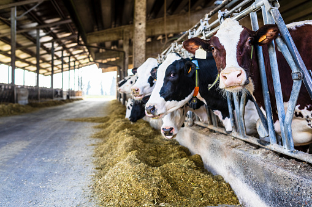

<div class="container">
    <div class="row my-4">
        <div class="col-sm-12">
            <div class="row mb-4">
                <div class="col-sm-8">
                    <div class="mb-4">
                        
                    </div>
                    <div class="row mb-4">
                        <div>
                            <h3>Finance and Accounting</h3>
                            <p>
                                The Finance and Accounting module proves to be an ideal solution that provides
                                real-time, in-depth financial insights and analysis reports. Handling all
                                account-related entries and viewing their impact on the whole business reflects the
                                complete flow of money as well as total expenditure. This, in some ways, aids in the
                                analysis of how money is received and spent. Ultimately, it helps you take the right
                                decision at the right time.
                            </p>
                            <ul>
                                <li>Accounts receivable and payable</li>
                                <li>Fixed Assets</li>
                                <li>Costing</li>
                            </ul>
                        </div>
                        <p>Allocation of Funds</p>
                        <div>
                            <ul>
                                <li>Maintenance of Accounts</li>
                                <li>Milk and Milk Products Revenue Monitoring</li>
                                <li>Internal Audit</li>
                                <li>Grant and loan disbursement and monitoring</li>
                                <li>Bank reconciliation</li>
                                <li>Fixed assets are registered for maintenance.</li>
                                <li>MIS reports</li>

                            </ul>
                        </div>
                    </div>
                </div>
                <div class="col-sm-4">
                    <h4>Services</h4>
                    <ul class="list-unstyled">
                        <li>Asset Management</li>
                        <li>Inventory Management</li>
                        <li>Sales and Distribution</li>
                        <li>Human Resources Management System</li>
                        <li>Finance and Accounting</li>
                        <li>Field Force Tracking</li>
                        <li>Vehicle Tracking System</li>
                    </ul>
                </div>
            </div>

        </div>
    </div>
</div>